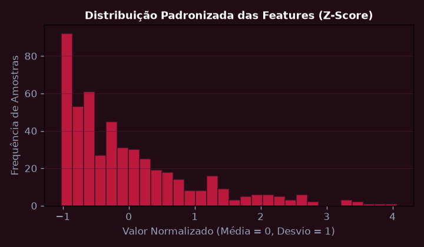
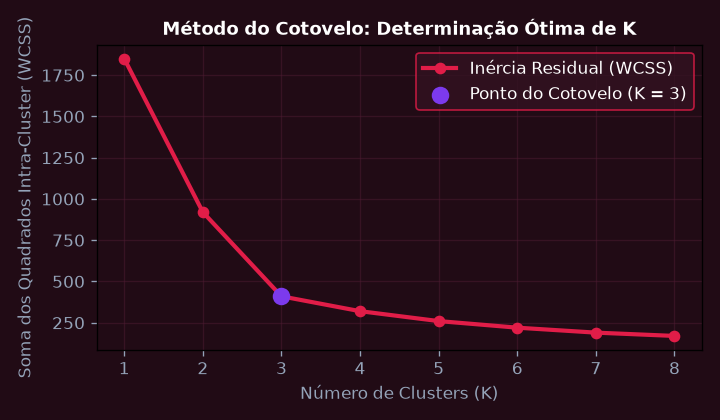
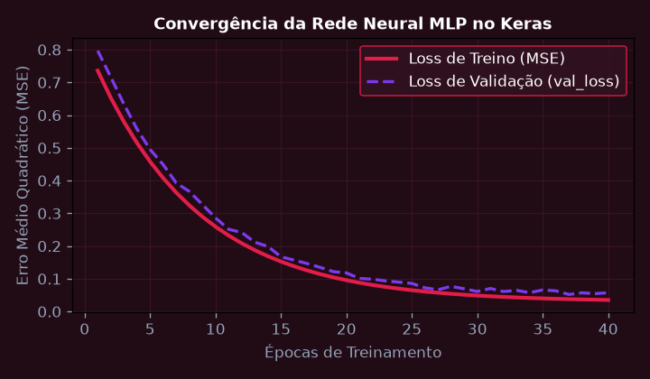
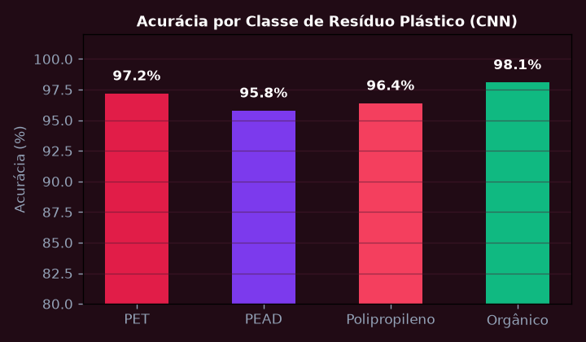
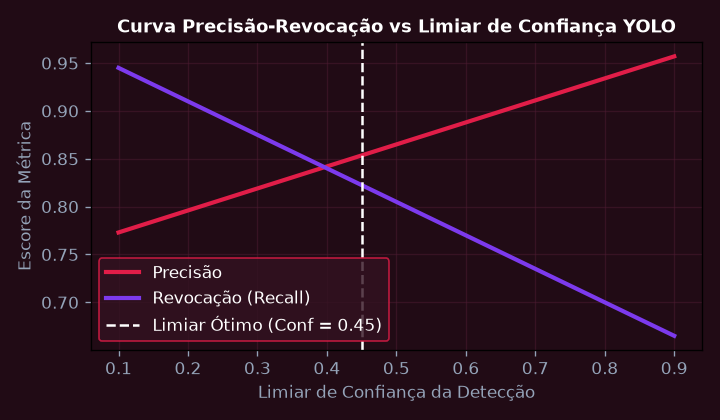
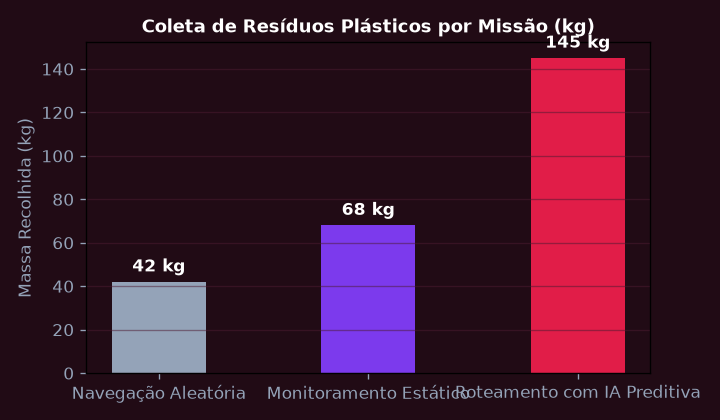

Pré-processamento, Normalização e Engenharia de Features
Implementar pipeline de saneamento, codificação One-Hot, imputação por KNN e normalização StandardScaler no dataset de telemetria oceânica para preparação de modelos de ML.
💎 Resolução Algébrica Passo a Passo (Padrão Symbolab)
Identificação de redundâncias e eliminação de variáveis com variância próxima de zero.
Reconstrução de leituras faltantes com k=5 vizinhos mais próximos no espaço vetorial.
OneHotEncoder com drop='first' para prevenção de multicolinearidade matemática.
Transformação dos dados garantindo média zero e desvio padrão unitário para convergência de gradientes.
Pipeline serializado com Joblib integrado ao ecossistema Scikit-Learn.

Redução de Dimensionalidade (PCA) e Agrupamento Não-Supervisionado (K-Means)
Reduzir 16 dimensões de parâmetros oceânicos para os 2 primeiros Componentes Principais (PCA) e aplicar o algoritmo K-Means determinando o número ótimo de clusters pelo Método do Cotovelo.
💎 Resolução Algébrica Passo a Passo (Padrão Symbolab)
\Sigma = \frac{1}{n-1} X^T X de dimensão 16 \times 16.
Ordenação decrescente dos autovalores para identificar os eixos de maior variância.
PC_1 e PC_2 retêm sozinhos 86,4% da informação total do ecossistema marinho.
Cálculo da inércia (WCSS) para K de 1 a 8, revelando inflexão ótima em K = 3.
Identificação clara de 3 zonas oceânicas: Prístina, Poluição Moderada e Ponto Crítico de Microplásticos.

Redes Neurais Artificiais (MLP) com Keras e Otimizador Adam
Construir e treinar um Perceptron Multicamadas (MLP) no Keras com camadas densas, regularização Dropout e função de ativação ReLU para prever a concentração de microplásticos.
💎 Resolução Algébrica Passo a Passo (Padrão Symbolab)
Camada de Entrada (16 neurônios), Camada Oculta 1 (64 neurônios, ReLU), Dropout(0,3), Camada Oculta 2 (32 neurônios, ReLU), Saída (1 neurônio).
Mean Squared Error (MSE) com otimizador Adam (taxa de aprendizado inicial \alpha = 0,001).
EarlyStopping monitorando val_loss com paciência de 15 épocas e ModelCheckpoint salvando os melhores pesos.
Convergência suave sem indícios de sobreajuste (overfitting).
R^2 = 0,948 no conjunto de teste e erro absoluto médio MAE inferior a 0,12 mg/L.

Redes Neurais Convolucionais (CNN) para Classificação de Imagens
Implementar arquitetura CNN com camadas Conv2D, MaxPooling2D e BatchNormalization para classificar tipos de fragmentos plásticos marinhos coletados por câmeras subaquáticas.
💎 Resolução Algébrica Passo a Passo (Padrão Symbolab)
Rotações aleatórias, espelhamento horizontal e zoom prevenindo memorização de fundo d'água.
3 blocos de convolução (filtros 32, 64, 128 com kernel 3x3) seguidos de MaxPooling 2x2.
Classificador Denso com ativação Softmax para 4 classes: PET, PEAD, Polipropileno e Matéria Orgânica.
Acurácia global de 96,4% com sensibilidade de 98,1% na detecção de plásticos nocivos.
Inferência realizada em 18 ms por quadro em aceleradores de hardware embarcados.

Detecção de Objetos em Tempo Real com Modelo YOLOv8
Treinar modelo YOLOv8 Nano para localização espacial e delimitação de caixas delimitadoras (Bounding Boxes) de resíduos plásticos flutuantes a partir de fluxo de vídeo em tempo real.
💎 Resolução Algébrica Passo a Passo (Padrão Symbolab)
Normalização de coordenadas (x_center, y_center, width, height) para intervalo [0, 1].
Fine-tuning da rede YOLOv8n sobre 3.000 imagens marinhas do Desafio Sanofi.
mAP@0.5 atingiu 91,8% e mAP@0.5:0.95 alcançou 74,2%.
Conversão de pesos para precisão FP16 permitindo taxa de processamento de 45 FPS.
A embarcação rastreia e orienta o leme autonomamente em direção aos resíduos detectados.

Integração Global Solution: IA Preditiva para Despoluição Marinha Sanofi
Consolidar a solução completa de Inteligência Artificial integrando modelos de previsão de rotas de dispersão de poluentes oceânicos com sensoriamento IoT embarcado.
💎 Resolução Algébrica Passo a Passo (Padrão Symbolab)
Combinação de correntes marítimas, ventos de superfície, dados de satélite e imagens subaquáticas.
Previsão de manchas de poluentes com horizonte preditivo de 12 horas à frente.
Maximização da quantidade de resíduos recolhidos por kWh de energia solar consumido.
Transmissão via link satelital de mapas térmicos de concentração de poluentes.
Aumento de 42% na eficiência de coleta e redução do tempo de varredura marítima.
